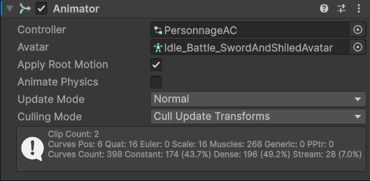
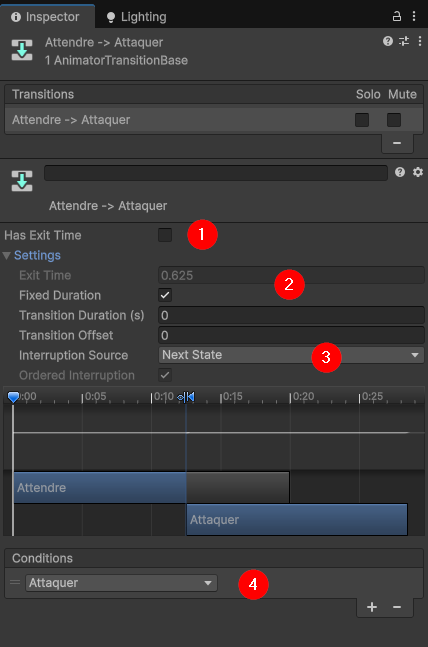

Animations
Information sur la page
- 3-2 Accéder à la boucle de jeu pour les mises à jour des animations

Description du système Mecanim, création de clips d'animation et de contrôleur d'animation, et intégration des animations au reste du jeu.
Animations
Les animations sont un élément important du rendu visuel d'un jeu vidéo. Il peut s'agir d'animations complexes de déplacement d'un personnage ou simplement d'un changement de couleur d'un élément de l'interface. Unity gère les animations avec le Mecanim Animation System. Certains composants legacy sont encore disponibles, mais leur usage est limité, comme le système Mecanim est disponible depuis 2015 (Unity 5.0).
Pour avoir un aperçu du système Mecanim, on peut consulter la documentation à ce sujet.
Éléments du système Mecanim¶
Deux éléments définissent les animations, soient les Animation Clip et Animation Controller :
Animation Clip: contient une séquence d'animation avec les données de l'animation qui se modifient à chaque frame. Dans Unity, les données d'animations ne se limitent pas à des données de position, mais à toutes les données qui peuvent être modifiées procéduralement.Animation Controller: contient la logique pour sélectionner leAnimation Clipà jouer. Permet de gérer les transitions entre les animations et aussi de mélanger plusieurs animations. Nous nous limiterons au cas le plus simple où chaque objet possède une unique logique d'animation qui s'applique à l'entièreté de l'objet.
Animation Controller¶
L'Animation Controller définit la logique entre les animations en adoptant un modèle de machine à état. Dans ce modèle, chaque Animation Clip est un état et des règles (appelées transitions) permettent de passer d'un état à un autre. On peut créer un Animation Controller avec le menu contextuel dans l'onglet du Project et l'attacher au Game Object à animer. Le composant qui permet de lier un Animation Controller à un Game Object est un Animator.
La documentation complète est disponible sur le site de Unity. Cette page présente un résumé des aspects de base des machines à états pour les animations.

Animator attaché à un personnageOn configure le comportement du Animation Controller dans la fenêtre Animator accessible dans le menu Window > Animations > Animator.
Éléments du composant Animator¶
- Controller : lien vers le
Animation Controllerqui gère les animations de ceGameObject. - Avatar : structure de squelette lors de l'animation d'un personnage. Généralement fourni avec le modèle.
- Apply root motion : calcule les mouvements en positions relatives à la racine du
GameObject. Lorsque cette option est décochée, le mouvement se fait en position absolue. - Animate physics : met à jour la physique du jeu selon l'animation. Cette option ralentit les performances, on évite de l'utiliser lorsque ce n'est pas nécessaire.
- Update mode : type de temps utilisé pour l'animation (Normal : suit l'écoulement du temps dans le jeu comme le Update, Fixed: suit l'écoulement du temps de la physique comme le FixedUpdate, Unscaled time : s'écoule avec le temps réel, donc même en pause l'animation est effectuée).

Animator du contrôleur d'animation d'un personnage- Parameters : permet d'ajouter et de supprimer des paramètres pour contrôler les animations;
- États et transition : vu des états (chaque état est un
Animation Clip) et des transitions (règle pour changer d'état); - Inspecteur : affiche les paramètres des états et des transitions;
Ajouter des états¶
Pour ajouter un état, on clique droit dans l'arrière-plan et l'on sélectionne " Create State > Empty ". Ensuite, peut affecter un Animation Clip dans le champ motion de l'inspecteur de l'état (qui s'active en cliquant sur l'état).
Le paramètre Speed permet de changer la vitesse à laquelle le clip se joue. Le paramètre Multiplier permet de contrôler la vitesse par un script et un parameter. On rend le champ modifiable en activant la case à cocher parameters et en le liant à un parameter de type float.
États spéciaux¶
Il y a quatre états spéciaux définis pour tous les cAnimation Controller :
- Entry (vert) : la logique d'animation commence à cet état. Il n'y a pas de clip d'associé à cet état, il transitionne automatique vers l'état par défaut.
- Default (orange) : premier état à s'exécuter. On peut le changer en cliquant droit sur un état et en sélectionnant " Set as Default Layer State "
- Exit (rouge) : indique au contrôleur de sortir de l'animation. On l'utilise lorsqu'on imbrique les contrôleurs d'animation (ce qui ne sera pas fait dans le cadre du cours);
- Any State (turquoise) : toutes les transitions sortantes peuvent être exécutées à partir de n'importe quel état. On l'utilise surtout pour alléger le nombre de transitions à gérer.
Ajouter des paramètres¶
Les paramètres sont des points d'accès à la logique de l'animation. L'utilisation des paramètres est présentée dans Gérer les transitions et Modifier la valeur des paramètres avec le code.
On peut ajouter des paramètres avec le situé dans le haut du panneau. Il y a quatre types de paramètres :
float,intetbool: expose un paramètre du type de la variable éponyme.trigger: expose un paramètre qui permet de simuler un événement subit. Il est dans l'état actif jusqu'à ce qu'il soit utilisé dans une transition et devient alors inactif.
Gérer les transitions¶
Les transitions permettent de changer l'état (donc l'animation jouée) lorsqu'une ou plusieurs conditions sont remplies. Elles sont représentées par des flèches dans le Animation Controller. Pour ajouter une transition, on clique droit sur l'état initial et on sélectionne Make Transition, puis on clique sur l'état vers lequel on veut transiter. Par la suite, en cliquant sur l'état, on peut modifier ses paramètres dans l'inspecteur.

- Has Exit Time : Indique que la transition s'effectue automatiquement après un temps passé dans l'animation plutôt que d'utiliser des conditions pour s'exécuter.
- Exit Time : Indique le temps auquel la transition prend fin. Si Fixed Duration est coché, alors il s'agit d'un temps absolu (seconde), dans le cas contraire, il s'agit d'un temps relatif (pourcentage de la durée totale de l'animation).
- Interruption Source : Détermine dans quelles conditions l'animation peut être interrompue. On choisit généralement la valeur Next State, qui enfile l'animation du prochain état. D'autres options sont disponibles.
-
Conditions : les conditions permettent de définir quand la transition doit avoir lieu. On utilise les paramètres pour définir les transitions. Si plusieurs conditions sont définies pour une condition, elles doivent toutes être vérifiées pour que la transition s'active.
a. Pour les
floatetinton compare la valeur à une valeur de référence.b. Pour les
intseulement, on peut tester l'égalité ou la différence avec une valeur.c .Pour les
bool, on compare avec les valeurstrueetfalse.d. Pour les
triggerla transition est effectuée si letriggerest déclenché. Lorsqu'il est lu et a provoqué une transition, sa valeur est réinitialisée.
Modifier la valeur des paramètres avec le code¶
Pour modifier la valeur d'un paramètre, on doit utiliser son nom et la méthode correspondante à son type sur le Animation Controller.
| Type du paramètre | Méthode | Paramètre |
|---|---|---|
float |
SetFloat | Le nom du paramètre et la valeur du float |
int |
SetInteger | Le nom du paramètre et la valeur dy int |
bool |
SetBool | Le nom du paramètre et la valeur du bool |
trigger |
SetTrigger | Le nom du paramètre |
Animation Clip¶
Un clip est lié à un game object ou un prefab particulier et définit des changements dans l'état de l'objet à chaque frame. On peut créer des clips directement dans Unity ou les importer en animant l'objet dans un autre éditeur (comme Blender ou Maya). La seconde approche est celle préférée pour animations complexes, mais pour les tâches simples, l'éditeur suffit.
Créer un Animation Clip¶
À venir